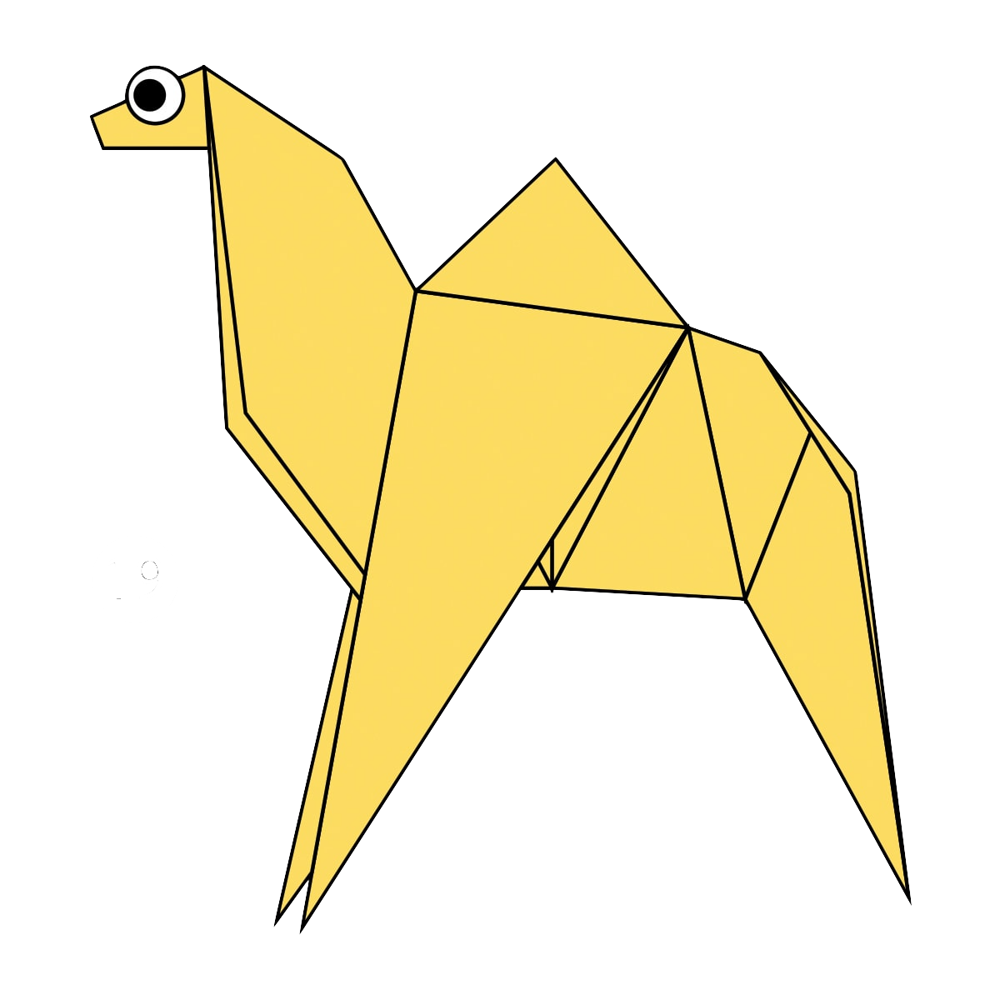
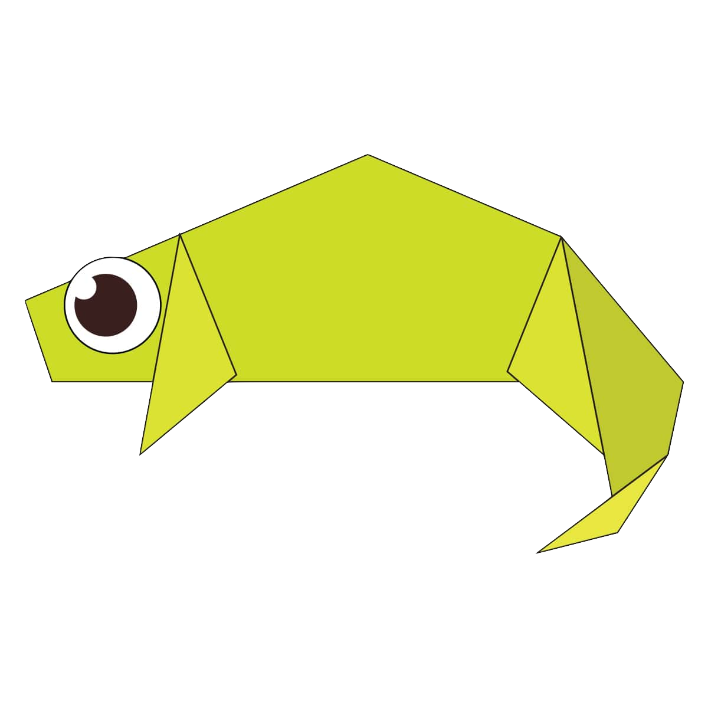
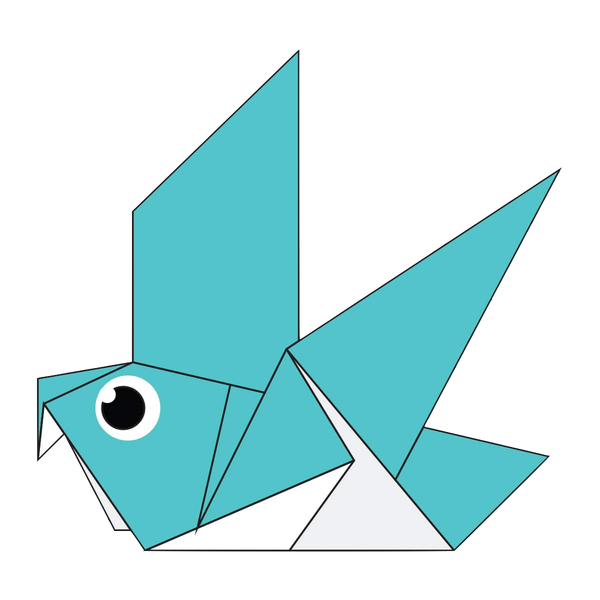
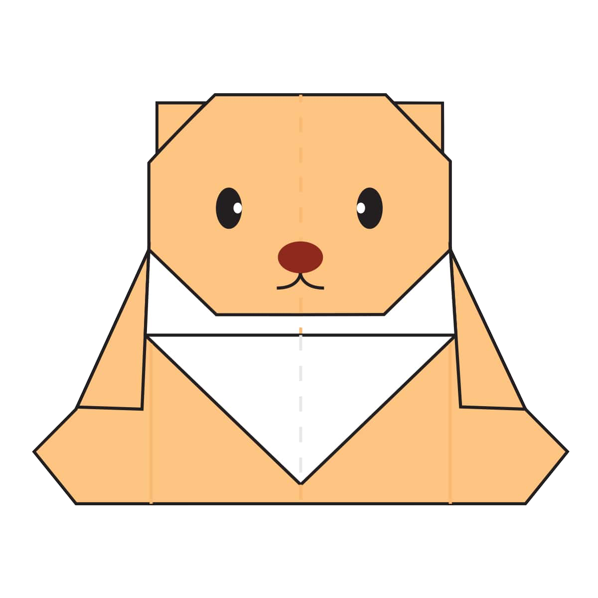
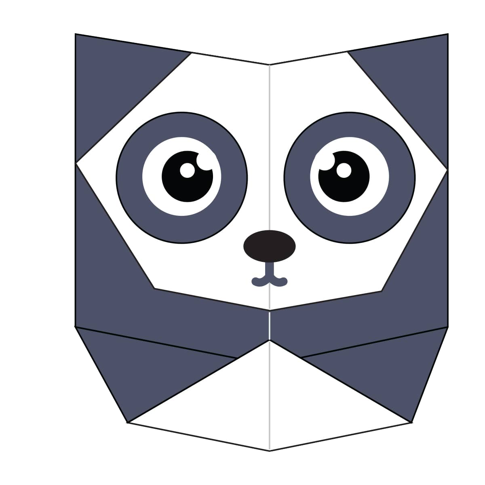
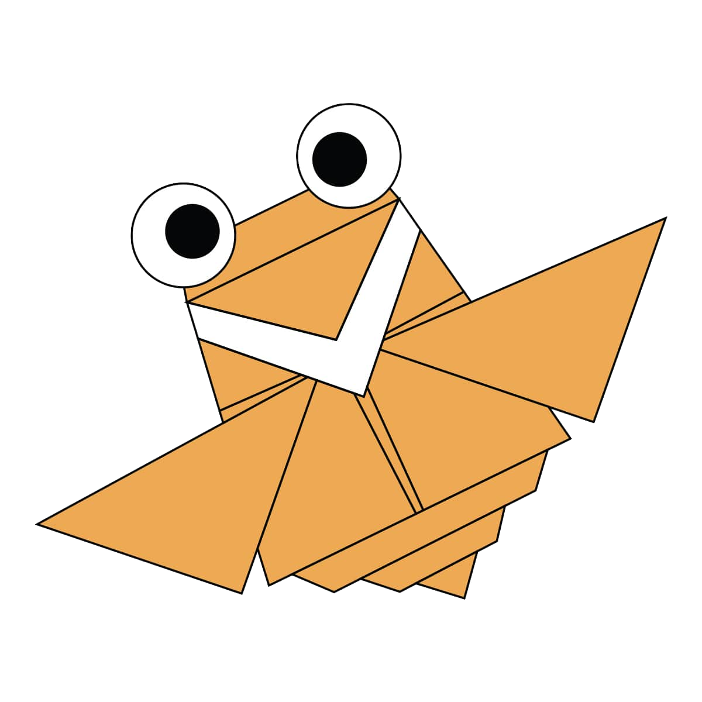

Origami Designs
Camel

Interesting Facts About Camel
- Camels have three sets of eyelids and two rows of eyelashes to keep sand out of their eyes.
- Camels have thick lips which let them forage for thorny plants other animals can’t.
- Thanks to thick pads of skin on their chest and knees, camels can comfortably sit in very hot sand.
- Their humps let them store up to 80 pounds of fat which they can live off for weeks and even months!
- Camels are very strong and can carry up to 900 pounds for 25 miles a day.
- There are over 160 words for camel in Arabic alone.
Chameleon

Interesting Facts About Chameleon
- There are around 160 species of chameleon.
- Chameleons live in warm varied habitats from rainforests through to deserts.
- Special color pigment cells under the skin called chromatophores allow some chameleon species to change their skin color
- Species of chameleon can be as small as 15 mm (0.59 in) or as large as 69 cm (27 in).
- Chameleons feed by ballistically projecting their tongues often over twice the length of their body to catch prey
- The chameleons tongue can reach its prey in just 0.07 split seconds
Pigeon

Interesting Facts About Pigeon
- Pigeons are incredibly complex and intelligent animals. They are one of only a small number of species to pass the ‘mirror test’ – a test of self recognition.
They can also recognise each letter of the human alphabet, differentiate between photographs, and even distinguish different humans within a photograph.
- Pigeons are highly sociable animals. They will often be seen in flocks of 20-30 birds.
- Pigeons mate for life, and tend to raise two chicks at the same time.
- Pigeons have excellent hearing abilities. They can detect sounds at far lower frequencies than humans are able to, and can thus hear distant storms and volcanoes.
- Pigeons can fly at altitudes up to and beyond 6000 feet, and at an average speed of 77.6 mph. The fastest recorded speed is 92.5 mph.
- Although pigeon droppings are seen by some as a problem in modern society, a few centuries ago pigeon guano was seen as extremely valuable.
It was viewed as the best available fertiliser and armed guards would even stand by dovecotes (pigeon houses) to stop others taking the droppings.
Bear

Interesting Facts About Bear
- Some species of Asiatic bear build nests in the trees. They can use these for hiding, eating and even sleeping.
- Bears are extraordinarily intelligent animals. They have far superior navigation skills to humans, excellent memories,
large brain to body ratio; and use tools in various contexts from play to hunting.
- Bears care deeply about family members. They will risk their lives and even fight to the death in order to save a cub or sibling from danger.
- Bears have excellent senses of smell, sight and hearing. They can smell food, cubs, a mate or predators from miles away. Their great eyesight allows them to detect when fruits are ripe.
- Bears grieve deeply for others. Cubs are known to moan and cry when separated from their mothers. This can go on for weeks if their mothers are killed by hunters.
- Vikings and the Celts have many legends about the strength, protectiveness and prowess of bears.
Panda

Interesting Facts About Panda
- An adult panda weight more than 45 kilos (100 pounds), and can be about 1.5 meters (5 feet) long!
- They can climb trees from 7 months old.
- Giant pandas are bears, and like other bears, they can swim.
- Not all giant pandas are black and white! A few are brown and white, but these are very rare.
- A 45-kilo adult (and pandas can reach 150 kg in captivity) spends as long as 14 hours eating. And it can eat 12 to 38 kilos of bamboo a day.
Cicada

Interesting Facts About Chameleon
- Their short adult life is not unusual for bugs. The adult stage for many insects is only for finding a mate or moving to a new location.
- Most have red-orange eyes. But occasionally cicadas have blue, white or grayish eyes. Keep on the lookout.
- Cicadas can survive a huge fall as babies, or nymphs. They are about the size of a grain of rice when they drop from a tree branch to the ground and start digging.
- They’re true bugs (from the order Hemiptera). So you can call them a bug and be scientifically accurate.
- Females may be attracted to the sound of motors. So you get to watch your dad, mom or older sibling get swarmed while they’re using the lawn mower or power tools.
- Cicadas can survive a huge fall as babies, or nymphs. They are about the size of a grain of rice when they drop from a tree branch to the ground and start digging.